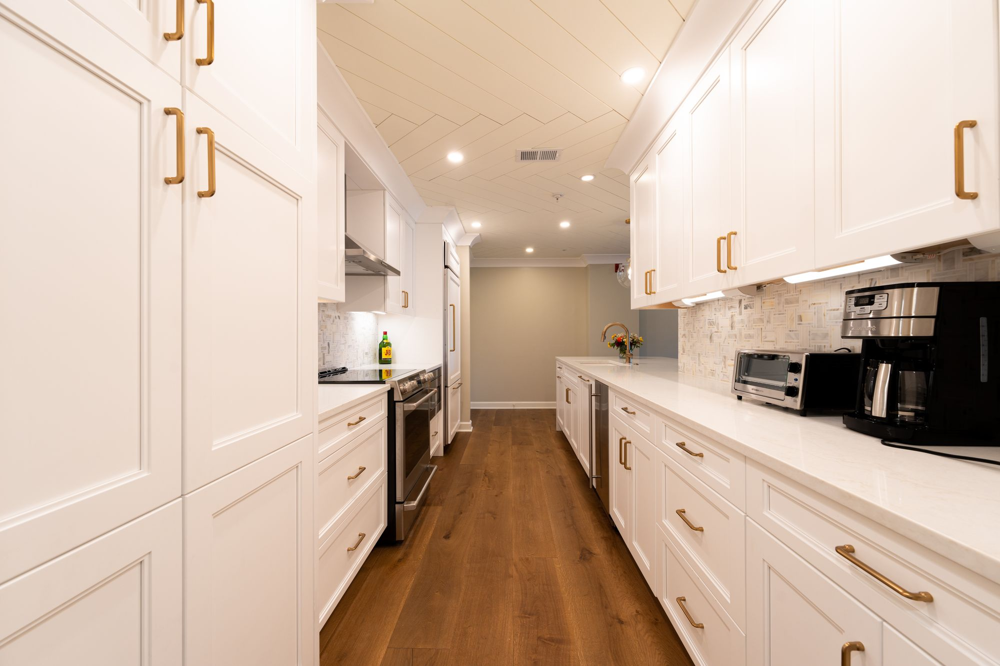
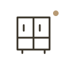
Kitchen remodeling
More considered storage, surfaces, lighting, and everyday flow.
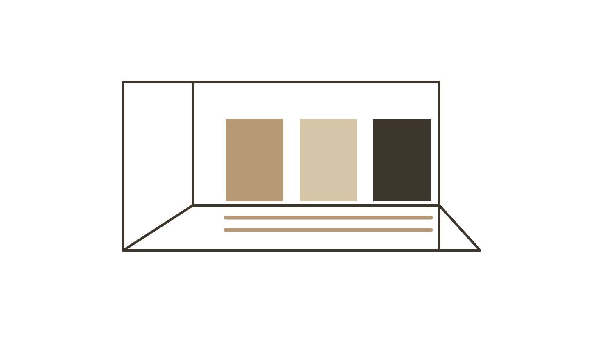
Thoughtful remodeling. Honest materials. A home with your life in mind.
Tell us about your home ↗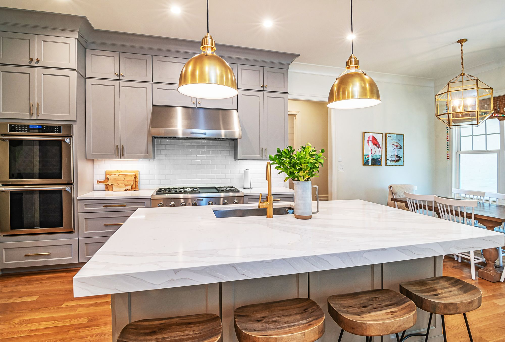


More considered storage, surfaces, lighting, and everyday flow.
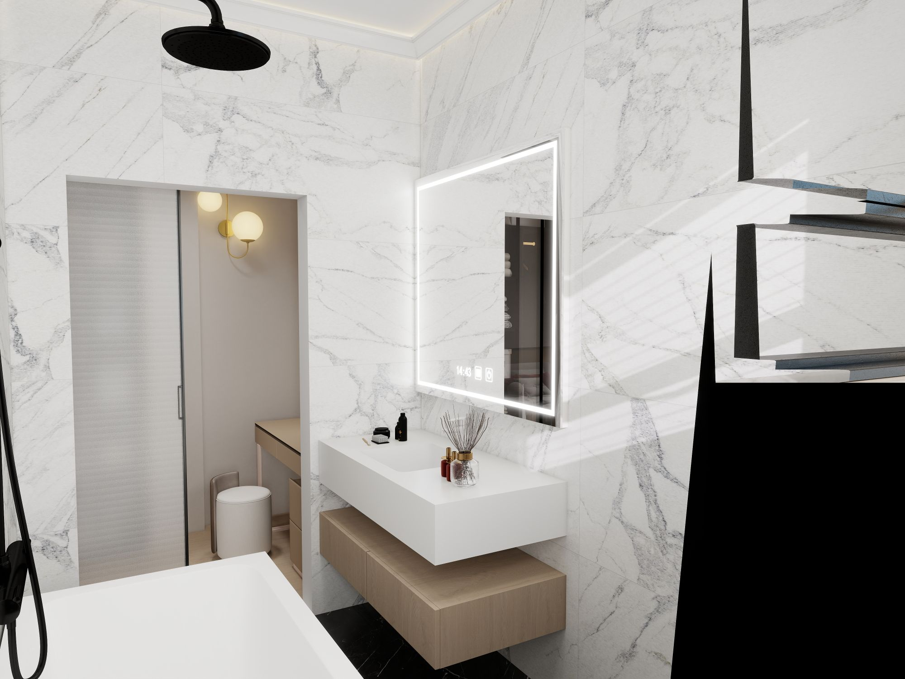
A calmer, more practical space for the start and end of the day.
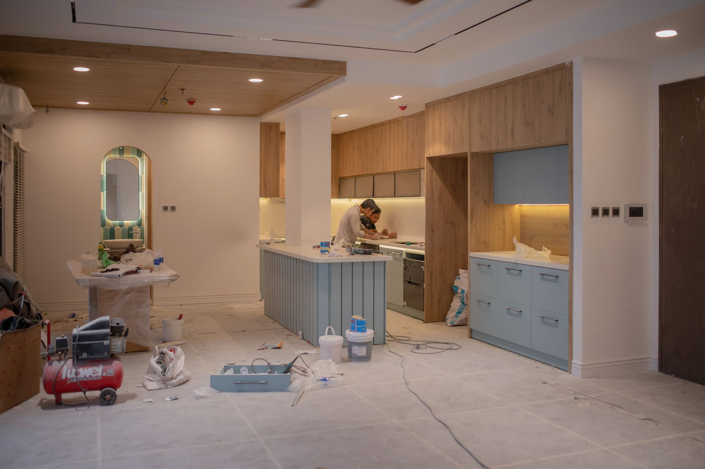
Thoughtful changes that help rooms work better together.
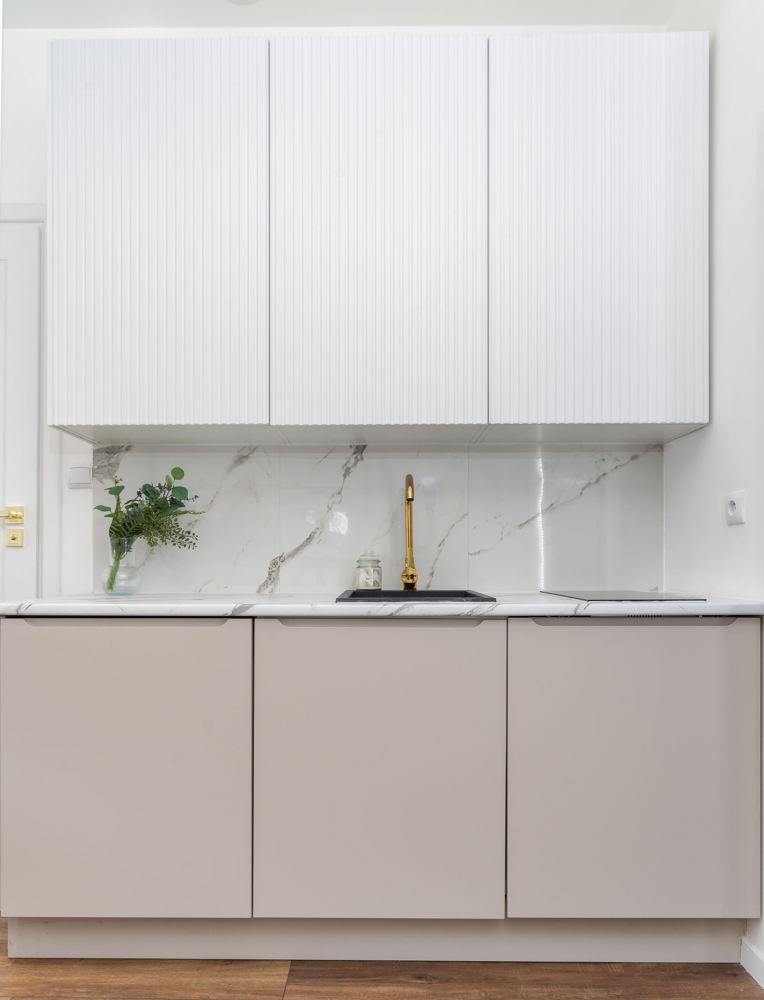
Bring materials, proportions, and priorities into a coherent plan.
The best remodeling conversations go beyond a photograph. Storage, movement, materials, and the things you want to make easier help define the project.
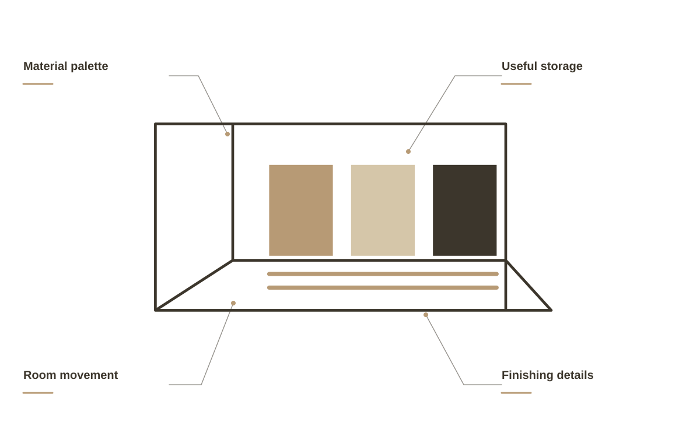
OAK & FORM / THE DETAILS MATTERDiscuss the way the room works today, the storage you need, and the finishes you are drawn to.
Bring together the layout, the fixtures, and the practical details that make a compact space useful.
Review materials and the transitions between rooms so individual decisions belong to the wider home.
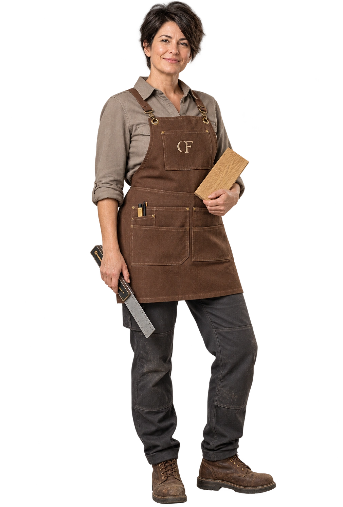
Good remodeling connects how a room looks with how it works. We start with your routines and priorities, then develop the scope, finishes, and practical details together.
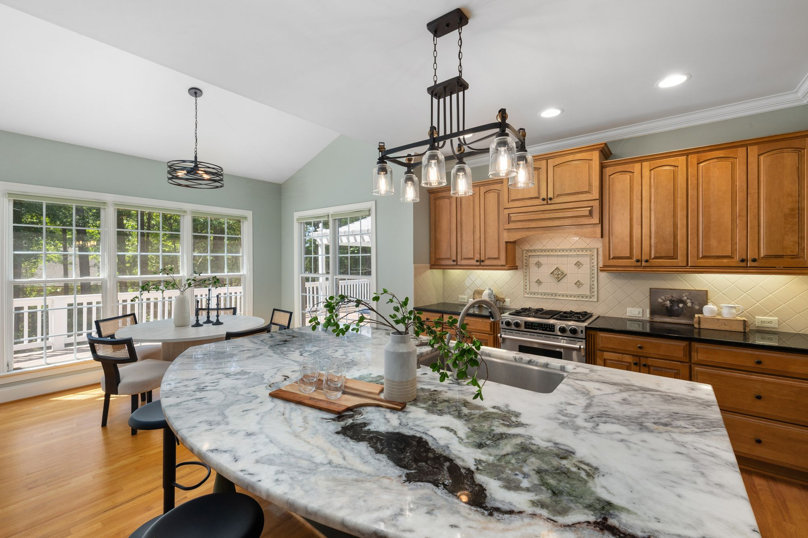
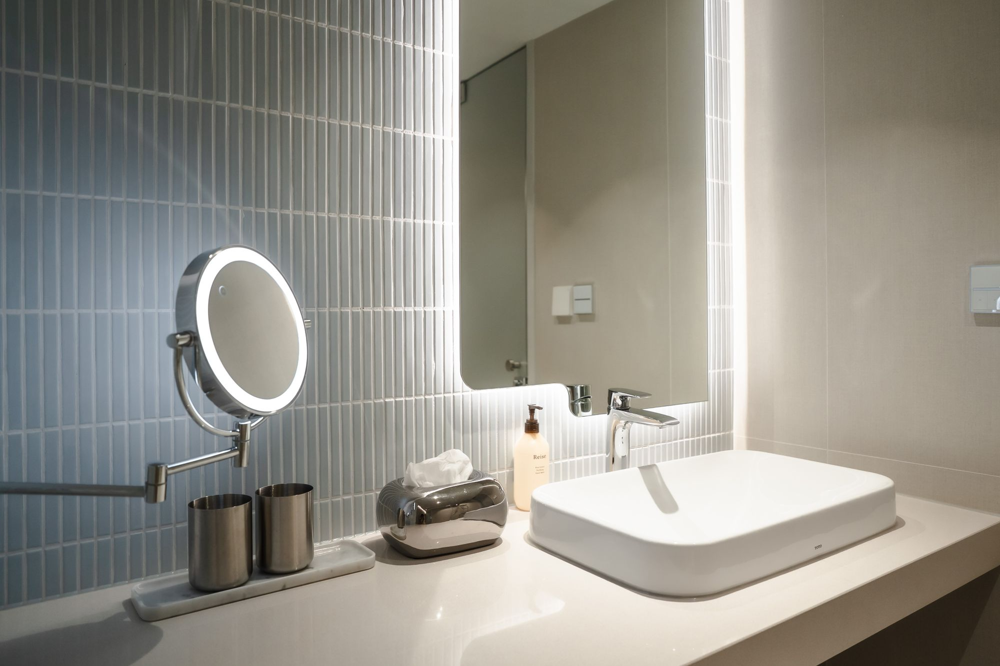
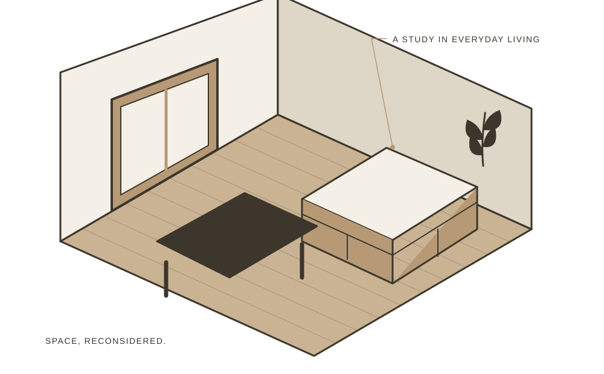
Share the room, the wish list, and what isn’t working.
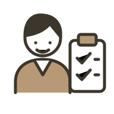
Discuss materials, budget, and the practical scope.
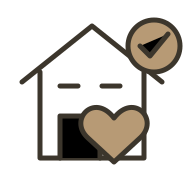
Understand the work and the next steps together.
When you get in touch, a little context goes a long way. These are the details that help us start a useful conversation about your remodeling project.
Tell us what you have in mind ↗Tell us about how the room works so the conversation starts with your situation.
A few details about what you want to change help us understand what you need.
Share materials and finishes when you get in touch, including photos where useful.
Let us know about scope and priorities so the proposed scope reflects your priorities.
Begin with what isn’t working in the room and what you want to change. Photos and a short wish list help guide the first conversation.
Yes. We can review finishes alongside the practical demands of the room and the overall design direction.
Absolutely. A clear budget discussion helps shape a useful, realistic scope from the start.